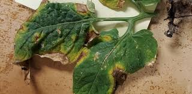
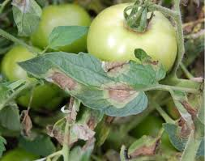
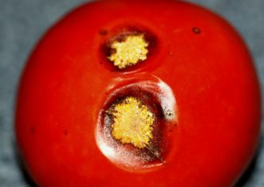

Tomato Plant Diseases
Early Blight
This disease is caused by the fungi Alternaria linariae (formally known as A. solani) and is first observed on the plants as small, brown lesions mostly on the older foliage. Spots enlarge and concentric rings in a bull’s-eye pattern may be seen in the center of the diseased area. The tissue surrounding the spots may turn yellow. If high temperature and humidity occur at this time, much of the foliage is killed. Lesions on the stems are similar to those on leaves and sometimes girdle the plant if they occur near the soil line (collar rot). On the fruits, lesions attain considerable size, usually involving nearly the entire fruit. Concentric rings are also present on the fruit. Infected fruit frequently drops. The fungus survives on infected debris in the soil, on seed, on volunteer tomato plants, and other solanaceous hosts, such as Irish potato, eggplant, and black nightshade (a common, related weed).


Late Blight
Late blight is a potentially serious disease of potato and tomato and is caused by the water mold pathogen Phytophthora infestans. Late blight is especially damaging during cool, wet weather. This pathogen can affect all plant parts. Young leaf lesions are small and appear as dark, water-soaked spots. These leaf spots will quickly enlarge, and a white mold will appear at the margins of the affected area on the lower surface of leaves. Complete defoliation (browning and shriveling of leaves and stems) can occur within 14 days from the first symptoms. Infected tomato fruits develop shiny, dark, or olive-colored lesions, which may cover large areas. Fungal spores are spread between plants and gardens by rain and wind. A combination of daytime temperatures in the upper 70s °F with high humidity is ideal for infection.
Anthracnose
Anthracnose on tomatoes is caused by a group of fungi within the genus Colletotrichum, and these species are primarily pathogens of the tomato fruit. As the fruit are ripening, the symptoms first become noticeable as small, circular indented areas, which later develop darkened centers. The diseased spots continue to grow larger with time as each infection site also spreads deeper into the fruit. With warm, moist, and humid weather (from rainfall or overhead irrigation), the fungus produces salmon-colored spores that are exuded from the black fungal material in the center of the spots. These spores are spread by splashing water.Because this disease affects other plants in the tomato family (Solanaceae), such as eggplants and peppers, the site for the tomatoes should not be planted again with solanaceous plants for at least a year. Some weeds that infest the garden are also in the same family, which is another reason to keep the garden free of weeds. Fungal spores can remain in the soil to infect plants the following year. Mulching the garden helps create a barrier between the soil surface and the fruit to reduce infections.
